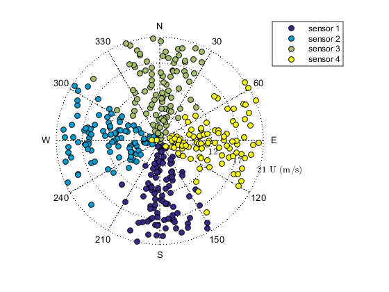
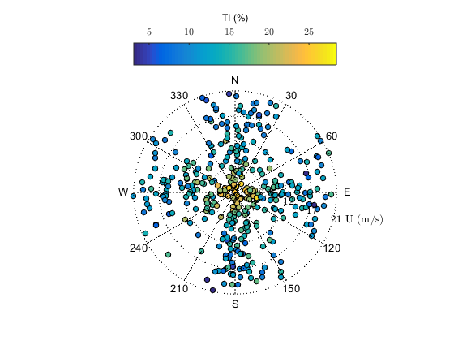

Examples
The different possibilities for this special type of wind rose are summarized below
Contents
Example 1
Multiple sensors, only 2 variables are represented. Here we show the wind direction and the mean wind speed for 4 different wind sensors
clearvars;close all;clc; rng(1) % initialise random numbers generation % % Multiple wind sensors and two variables : mean wind speed and wind direction Nsensors =4; % number of wind sensors Nsamples = 100; % number of samples COLOR = parula(Nsensors); % color choice % generation of records Dir = [180,270,0,90]'*ones(1,Nsamples)+... 20.*randn(Nsensors,Nsamples); % #1 Mean wind direction U = abs(1.*randn(Nsensors,Nsamples)+... ones(Nsensors,1)*linspace(5,20,Nsamples)); %#2 Mean wind speed % plot the wind rose jj=1; figure for ii=1:Nsensors, h{ii} = ScatterWindRose(Dir(ii,:),U(ii,:),'labelY','U (m/s)'); set(h{ii},'Marker','o','markerfacecolor',... COLOR(ii,:),'markeredgecolor','k') hold on set(h{ii},'color',COLOR(ii,:)) leg{jj} = ['sensor ',num2str(jj)]; jj=jj+1; end set(gcf,'color','w'); legend([h{:}],leg,'location','NorthEastOutside'); % put axis and text on top th1 = findobj(gcf,'Type','text'); th2 = findobj(gcf,'Type','line'); for jj = 1:length(th1), uistack(th1(jj),'top'); end for jj = 1:length(th2), uistack(th2(jj),'top'); end
Example 2
Three variables :
- Mean wind speed (Based on the 4 wind sensors from Example 1)
- Turbulence intensity (TI)
- Wind direction (Based on the 4 wind sensors from Example 1)
% TI is defined as: TI =abs(0.05+abs(1./U)+0.03.*randn(size(U))); % #3 TI % force column vectors: % we are not longer interested in identifying the sensors Dir = Dir(:); U=U(:); TI = TI(:)*100; % We only want to look at TI lower than 30 % indTI = find(TI>30); U(indTI)=NaN; % set limits and labels limU = [min(U),max(U)]; % #3 limites for the wind speed name_U = 'U (m/s)'; % #4 name of variable U name_IU = 'TI (%)'; % #4 name of variable IU % plot the data figure h = ScatterWindRose(Dir,U,'Ylim',limU,'labelY',name_U,'labelZ',name_IU,'Z',TI); % put axis and text on top th1 = findobj(gcf,'Type','text'); th2 = findobj(gcf,'Type','line'); for jj = 1:length(th1), uistack(th1(jj),'top'); end for jj = 1:length(th2), uistack(th2(jj),'top'); end